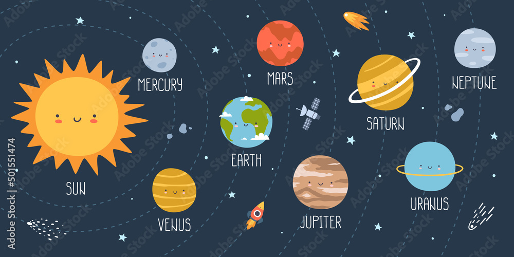
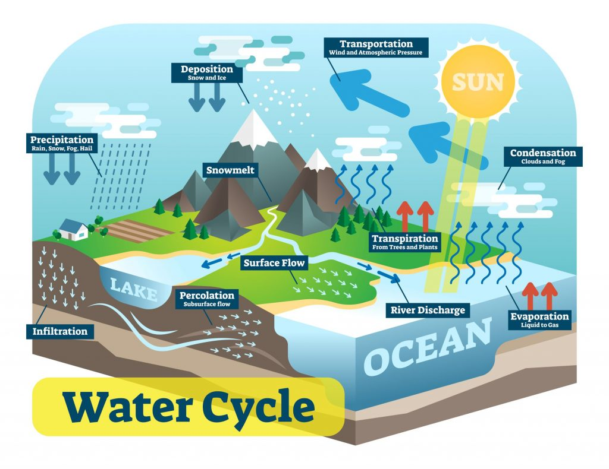
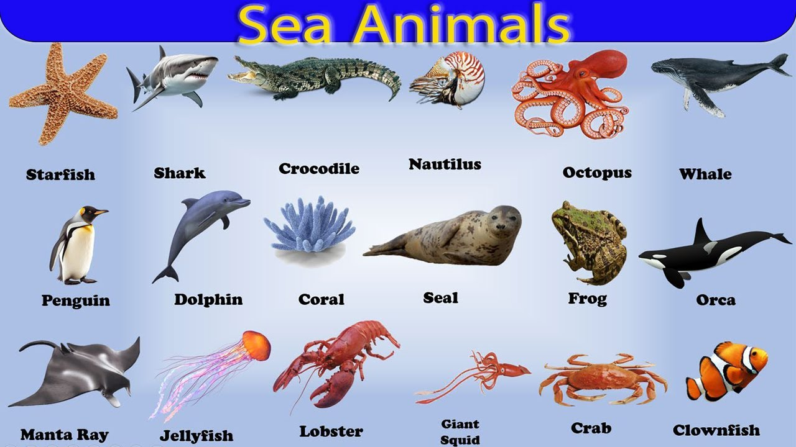
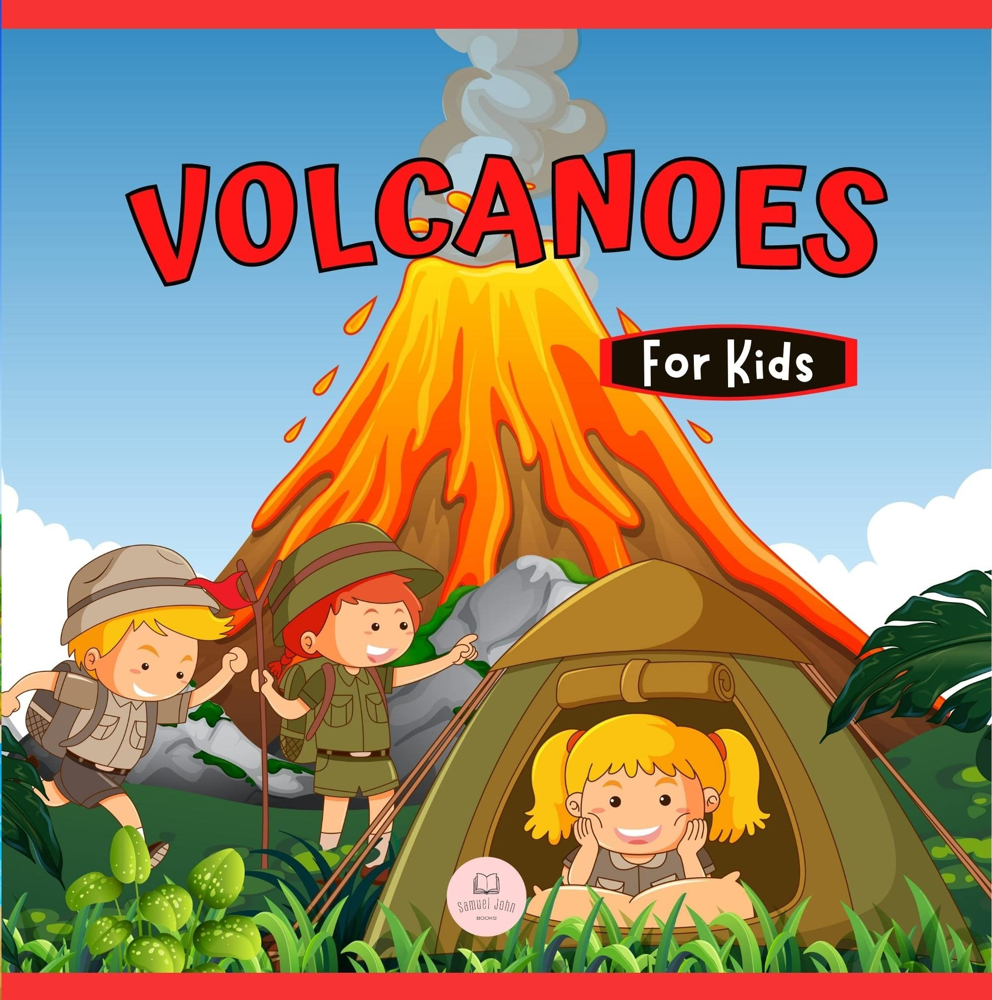
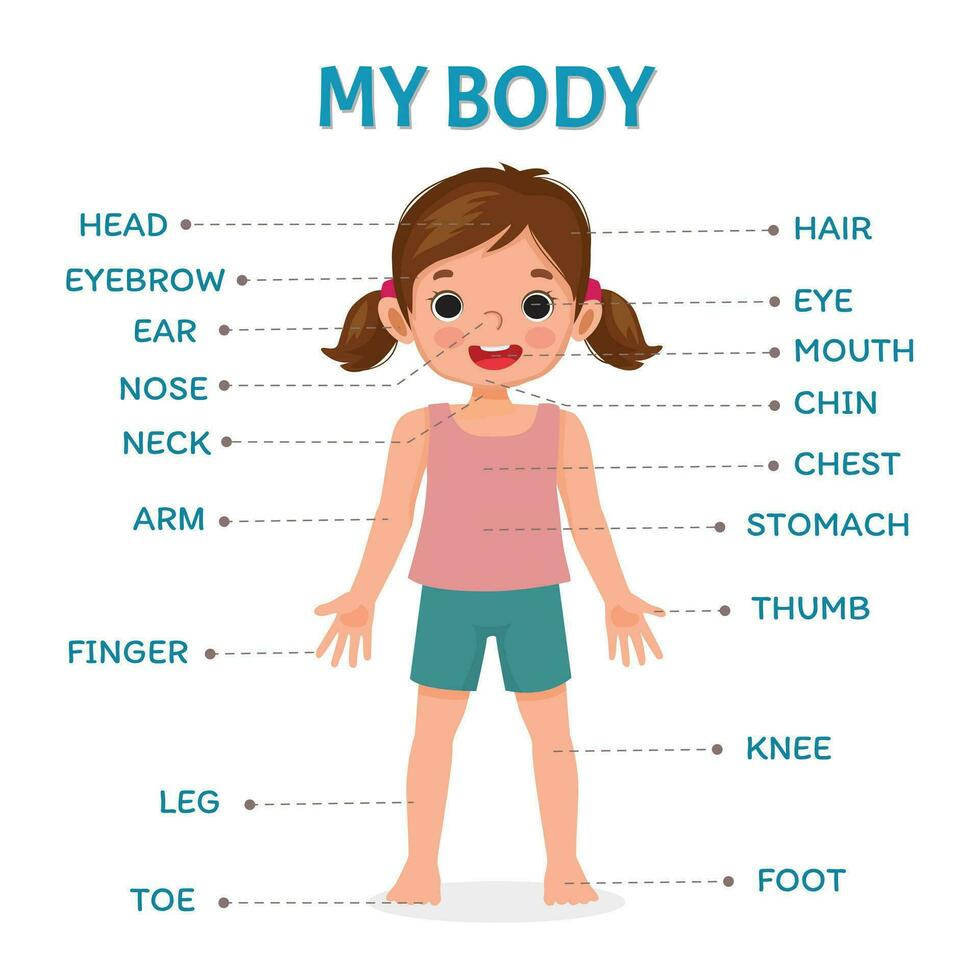

The Planets
Did you know there are 8 planets in our solar system? They are:
- Mercury
- Venus
- Earth
- Mars
- Jupiter
- Saturn
- Uranus
- Neptune
Fun Fact: Jupiter is the largest planet, and it could fit 1,300 Earths inside it!
The Water Cycle
The water cycle has three main stages:
- Evaporation: Water turns into vapor and rises into the sky.
- Condensation: Water vapor cools and forms clouds.
- Precipitation: Water falls back to the ground as rain, snow, or hail.
Fun Fact: The water you drink today could have been part of a cloud thousands of years ago!
Animals of the Ocean
The ocean is home to some amazing animals, including:
- Whales
- Sharks
- Jellyfish
- Octopus
- Dolphins
Fun Fact: Dolphins are known for their intelligence and communication skills!
Volcanoes
Volcanoes are openings in the Earth's crust where molten rock, gas, and ash erupt. They can be found all over the world!
- Mount Vesuvius
- Mount Fuji
- Mount Etna
Fun Fact: The world's largest volcano, Mauna Loa in Hawaii, is still active today!
The Human Body
The human body is a fascinating system made up of organs and tissues. Here are some key organs:
- Brain: Controls the body and its functions.
- Heart: Pumps blood through the body.
- Lungs: Help you breathe.
- Stomach: Digests food.
Fun Fact: The average human heart beats over 100,000 times a day!
